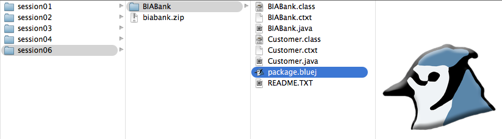
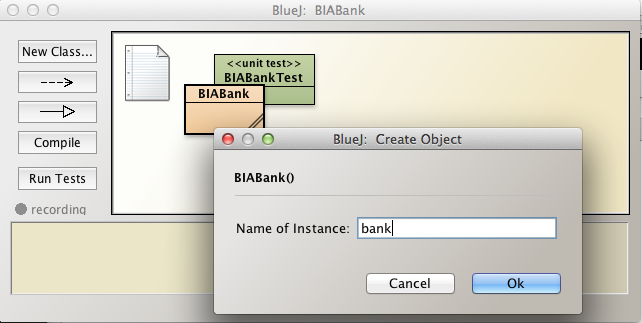
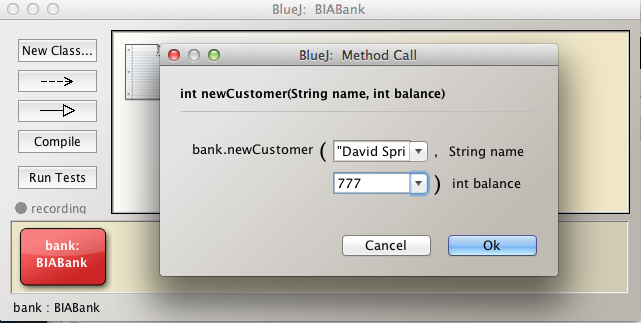
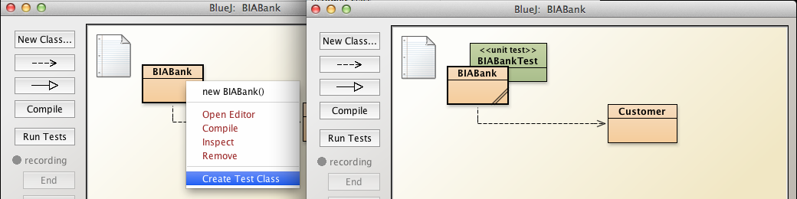
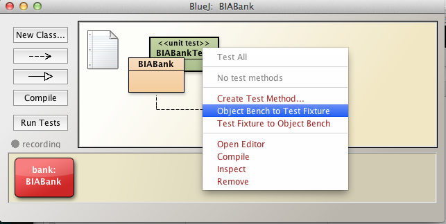
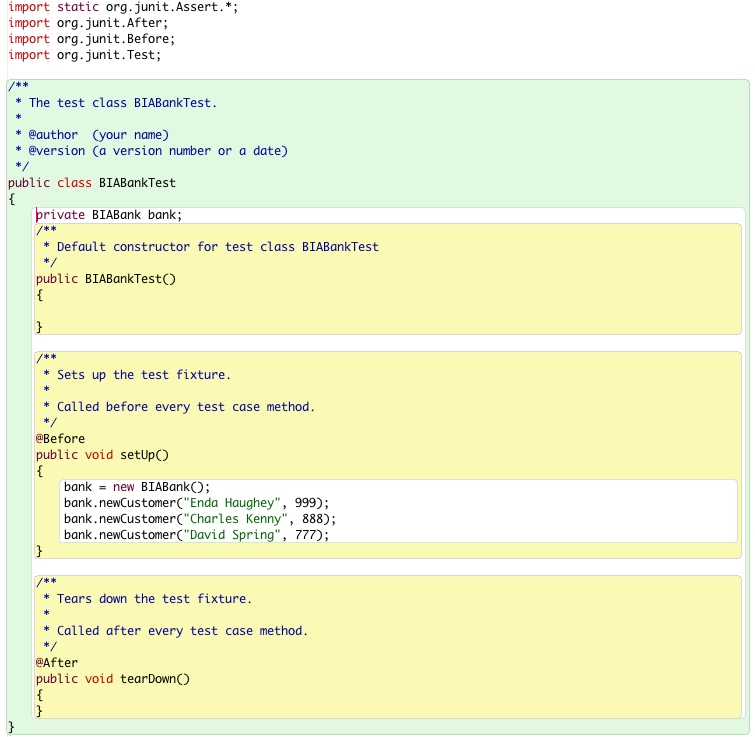
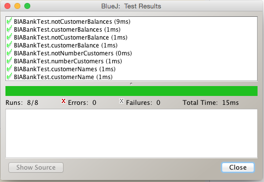

These are the solutions to the labs in this session BlueJ Debug & Unit Test.
Exercise
DiaryTester: Write the negative regression test capacityOverrun:
Solution
public boolean capacityOverrun()
{
int dayNmr = 0;
Day day = new Day(dayNmr);
Appointment appointment = new Appointment("Capacity overrun test",
Day.MAX_APPOINTMENTS_PER_DAY + 1);
return day.makeAppointment(Day.START_OF_DAY, appointment);
}Use this method in the unit test class, DiaryTesterTest, for example by including it in the suite of negative tests as shown here in this code snippet:
@Test
public void negativeTests()
{
...
assertEquals(false, diaryTester.capacityOverrun());
...
}Setup
This exercise comprises addition to and unit testing of BIABank class, developed in an earlier lab.

Task 1
Observe the following field in BIABank:
Create a method in BIABank with this signature:
The method searches through the list of customers for a customer matching the actual parameter name.
Task 1 Solution
/**
* Retrieve the Customer object associated with a customer name
* Should no such customer exist then, rather than null, return
* a Customer object with actual parameters shown here
* Customer("No such customer", 0, 0)
* Note that Customer constructor signature is:
* Customer(String name, int accountNumber, int balance)
*
* @param the name of the customer
* @return Customer object associated with customer name if it exists
* else Customer object with parameters Customer("No such customer", 0, 0)
**/
public Customer getCustomer(String name)
{
Iterator<Customer> it = customers.iterator();
while (it.hasNext())
{
Customer nextCustomer = it.next();
if (nextCustomer.name.equals(name))
{
return nextCustomer;
}
}
return new Customer("No such customer", 0, 0);//better alternative to null
}Task 2
bank.newCustomer("Enda Haughey", 999);
bank.newCustomer("Charles Kenny", 888);
bank.newCustomer("David Spring", 777);Create a BIABank test class and create a fixture by invoking the following method on the test class:
Task 2 Solution
The solution to this exercise simply comprises executing the series of steps outlined, namely:
    
Task 3
Write a positive test named numberCustomers:
Task 3 Solution
We have the choice of adding test methods to BIABankTest class using the BlueJ recorder or manually. Here we shall use the latter approach.
Here is the required test method.
@Test
public void numberCustomers()
{
assertEquals(true, bank.customers.size() == 3);
}Include numberCustomers in BIABankTest.java, compile and invoke Test All.
Task 4
Write a positive test named customerName:
Task 4 Solution
Here is the method customerName:
@Test
public void customerName()
{
String name = "Enda Haughey";
Customer customer = bank.getCustomer(name);
assertEquals(true, customer.name.equals(name));
}We have chosen, at random, one of the customer names from the list of three customers.
Task 5
Write a positive test named customerNames:
Task 5 Solution
@Test
public void customerNames()
{
String name1 = "Enda Haughey";
Customer customer1 = bank.getCustomer(name1);
boolean b1 = customer1.name.equals(name1);
String name2 = "Charles Kenny";
Customer customer2 = bank.getCustomer(name2);
boolean b2 = customer2.name.equals(name2);
String name3 = "David Spring";
Customer customer3 = bank.getCustomer(name3);
boolean b3 = customer3.name.equals(name3);
assertEquals(true, b1 && b2 && b3);
}Task 6
Write a positive test named customerBalance:
Task 6 Solution
@Test
public void customerBalance()
{
String name = "Enda Haughey";
Customer customer = bank.getCustomer(name);
assertEquals(true, customer.balance == 999);
}Task 7
Write a positive test named customerBalances:
Task 7 Solution
@Test
public void customerBalances()
{
String name1 = "Enda Haughey";
Customer customer1 = bank.getCustomer(name1);
int balance1 = customer1.balance;
String name2 = "Charles Kenny";
Customer customer2 = bank.getCustomer(name2);
int balance2 = customer2.balance;
String name3 = "David Spring";
Customer customer3 = bank.getCustomer(name3);
int balance3 = customer3.balance;
assertEquals(true, balance1 + balance2 + balance3 == (999 + 888 + 777));
}Task 8
Write a negative test in BIABankTest named notNumberCustomers.
Task 8 Solution
@Test
public void notNumberCustomers()
{
assertEquals(false, bank.customers.size() != 3);
}Task 9
Write a negative test named notCustomerBalance:
Task 9 Solution
@Test
public void notCustomerBalance()
{
String name = "Enda Haughey";
Customer customer = bank.getCustomer(name);
assertEquals(false, customer.balance == 888);
}Task 10
Write a negative test named notCustomerBalances:
Task 10 Solution
@Test
public void notCustomerBalances()
{
String name1 = "Enda Haughey";
Customer customer1 = bank.getCustomer(name1);
int balance1 = customer1.balance;
String name2 = "Charles Kenny";
Customer customer2 = bank.getCustomer(name2);
int balance2 = customer2.balance;
String name3 = "David Spring";
Customer customer3 = bank.getCustomer(name3);
int balance3 = customer3.balance;
assertEquals(false, balance1 + balance2 + balance3 == (2000));
}When you have completed all the tasks invoke Test All on BIABankTest. The result should match that in Figure 1.
